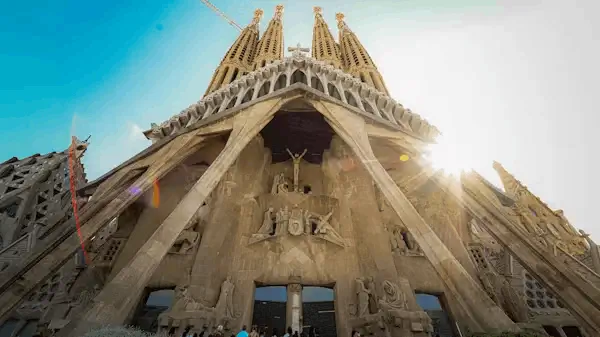
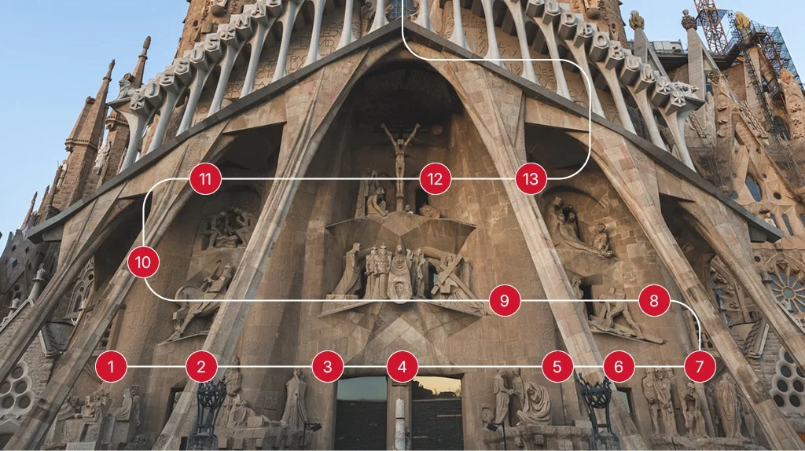

La Torre de Jesucristo es la torre más alta de la Basílica de la Sagrada Familia, diseñana por Antoni Gaudí. Su altura será de 172,5 metros cuando esté finalizada, convirtiéndola en la torre de iglesia más alta del mundo.
📐 Datos clave
- Altura: 172,5 m
- Diseño: Antoni Gaudí
- Inicio construcción: 1882
- Finalización prevista: 2026
Comparativa de torres
| Torre | Altura (m) | Año finalización |
|---|---|---|
| Jesucristo | 172,5 | 2026 |
| Virgen María | 138 | 2025 |
| San Marcos | 135 | 2025 |

Galería arquitectónica
Más información: Visita el sitio web oficial de la Sagrada Familia